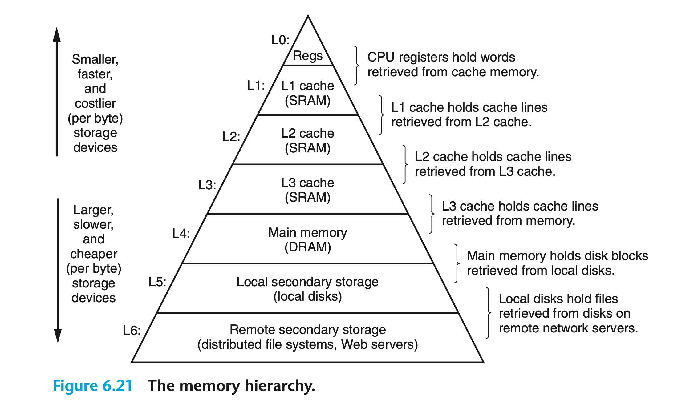

存储器层次结构¶
存储系统（Memory System）包含多个层级（Hierarchy），每个层级的存储设备（Storage Device）具有不同的容量、成本和访问速度。层级越低，存储设备的容量就越大，成本也越低，但访问速度却越慢。存储系统的层级结构对应用性能有着显著的影响，其中最为重要的便是 CPU 与主存储器之间的高速缓存。
存储技术¶
随机存取存储器¶
随机存取存储器（Random Access Memory，RAM）有两种，分别是静态（Static）的 SRAM 和 动态（Dynamic）的 DRAM。其中，SRAM 的访问速度比 DRAM 更快，不过其成本明显更高。SRAM 用于 CPU 芯片内外的缓存，而 DRAM 则用于主存储器和图形系统中的帧缓存（Frame Buffer）。
SRAM¶
SRAM 将每个位存储在一个双稳态（Bistable）的存储单元中，每个单元是由一个六晶体管电路实现的，其结构类似于下图中的倒转摆锤：

该电路将永远处于两种电压配置（状态）之一。任何其他的状态都是不稳定的，将会快速地朝向其中一个稳定的状态移动。因此只要 SRAM 通电，就会永久地保存其值而不受一些扰动（如电噪声）的影响。
DRAM¶
DRAM 将每一位存储为一个电容上的电荷，其存储单元对任何扰动都十分敏感。电流泄露会导致 DRAM 单元在大约 10 到 100 毫秒的时间内失去电荷，因此存储系统必须定期地通过读取并重写来刷新其中的每一位。
传统的 DRAM¶
DRAM 芯片上的位可以被划分为 \(d\) 个超级单元（Supercell），每个超级单元包含 \(w\) 个 DRAM 单元，因此一个 \(d \times w\) 的 DRAM 能够存储 \(dw\) 位的信息。下图展示了一个 16 \(\times\) 8 的 DRAM 芯片结构：
 16 个超级单元被排列成一个 4 \(\times\) 4 的矩阵，图中标为阴影的超级单元地址为 (2, 1)。信息通过外部连接器（也称 Pin）流入或流出芯片，每个 Pin 都可以携带一位信号。上图中包含了八个传输信息的
16 个超级单元被排列成一个 4 \(\times\) 4 的矩阵，图中标为阴影的超级单元地址为 (2, 1)。信息通过外部连接器（也称 Pin）流入或流出芯片，每个 Pin 都可以携带一位信号。上图中包含了八个传输信息的dataPin，以及两个携带超级单元地址的addrPin。
每个 DRAM 芯片都连接了一个被称为存储控制器（Memory Controller）的电路，它可以一次传输 \(w\) 位的数据。为了读取超级单元 (i, j) 中的内容，存储控制器会向 DRAM 发送行地址 i 和 列地址 j 的寻址请求，分别被称为 RAS（Row Access Strobe）请求和 CAS（Column Access Strobe）请求。详细的读取过程如下图所示：
存储控制器首先发送行地址请求，DRAM 会将整个第 2 行拷贝到内部的行缓冲区（图中的“Internal Row Buffer”）中。然后存储控制器再发送列地址请求，DRAM 将从行缓冲区中拷贝超级单元 (2, 1) 的值返回给存储控制器。
只要对存储控制器读取 DRAM 的过程有所了解，我们就能明白超级单元的排列方式为什么是矩阵而非一维线性数组。在我们的例子中，DRAM 包含了 16 个超级单元。如果按一维数组排列，则超级单元的地址范围为 0 到 15，因此就需要四个 Pin（即四位）来进行寻址。当然，矩阵排列方式也有一定缺点。存储控制器读取超级单元需要分为两个步骤，从而增加了访问时间。
存储模块¶
DRAM 芯片被封装在存储模块（Memory Modules）中，如下图所示：
 示例的存储模块包含 8 个 8M \(\times\) 8 DRAM 芯片，能够存储 64 MB 的数据。每个超级单元存储主存储器中的一字节（八位）信息，八个超级单元就可以表示一个地址为“A”的 64 位 Word。存储控制器首先将地址“A”转换为超级单元地址 (i, j)，然后将其发送到存储模块中。存储模块会向所有的 DRAM 广播地址 i 和 j，从而得到每个 DRAM 中超级单元 (i, j) 的内容。存储模块中的电路会将结果整合为一个 64 位的 Word，最终返回给存储控制器。
示例的存储模块包含 8 个 8M \(\times\) 8 DRAM 芯片，能够存储 64 MB 的数据。每个超级单元存储主存储器中的一字节（八位）信息，八个超级单元就可以表示一个地址为“A”的 64 位 Word。存储控制器首先将地址“A”转换为超级单元地址 (i, j)，然后将其发送到存储模块中。存储模块会向所有的 DRAM 广播地址 i 和 j，从而得到每个 DRAM 中超级单元 (i, j) 的内容。存储模块中的电路会将结果整合为一个 64 位的 Word，最终返回给存储控制器。
改进的 DRAM¶
我们可以对传统的 DRAM 进行优化以提升其访问速度：
- FPM（Fast Page Mode）DRAM：传统 DRAM 将整行数据拷贝到缓冲区中，使用其中一个并丢弃剩余的超级单元。FPM DRAM 可以连续访问同一行的超级单元，因此速度更快。例如读取一行中的四个超级单元，传统 DRAM 需要发送四次 RAS 请求和四次 CAS 请求，而 FPM DRAM 则只需要一次 RAS 请求和四次 CAS 请求；
- EDO（Extended Data Out） DRAM：通过减少发送 CAS 信号的时间间隔来对 FPM DRAM 进行优化；
- SDRAM（Synchronous DRAM）：上文提及的所有 DRAM 都是异步（Asynchronous）地向存储控制器发送信号的，因此同步的 SDRAM 传输数据的速率更快；
- DDDR（Double Data-Rate Synchronous）DRAM：使用时钟边缘（Clock Edge）作为控制信号来将 SDRAM 的速度提升一倍；
- VRAM（Video RAM）：常用于图形系统的帧缓存，其本质与 FPM DRAM 类似。区别在于 VRAM 通过依次对内部缓冲区的内容移位来输出数据，并且可以并行地读写内存。
非易失性存储器¶
非易失性存储器（Nonvolatile Memory）在断电后还会继续保留其存储的信息。即使有些非易失性存储器是可读写的，但由于历史原因，它们被统一称为 ROM（Read-only Memory）。不同种类 ROM 的区别在于其能够被重新编程（写入）的最大次数，以及写入的实现机制。
- PROM（Programmable ROM）：只能被编程一次；
- EPROM（Erasable programmable ROM）：可以被擦除和重新编程约 1000 次；
- EEPROM（Electrically Erasable PROM）：与 EPROM 相比，不需要单独的物理编程设备，但只可以重新编程 105 次；
- 闪存（Flash Memory）：基于 EEPROM 的一项重要存储技术，SSD 就是通过闪存实现的。
存储在 ROM 中的程序通常称为固件（Firmware）。一些系统会在固件中提供简单的输入/输出功能，比如 PC 的 BIOS（Basic Input/Output System）。
访问主存储器¶
数据通过共享的电气管道在 CPU 和 DRAM 主存储器之间流动，这些管道被称为总线（Bus）。数据传输的过程由一系列的总线事务（Bus Transaction）组成，其中读事务将数据从主存加载到 CPU 中，写事务则将数据从 CPU 传输到主存中。
总线是一组可以传输地址、数据和控制信号的并行线的集合，其中控制总线负责同步事务并识别当前正在执行事务的类型。下图展示了计算机系统中的总线结构：
 图中的“I/O Bridge”是一组芯片的集合，包含了上文中提到的存储控制器。它会将系统总线（图中的“System bus”）的电信号转换为存储器总线（图中的“Memory bus”）的电信号，反之亦然。当 CPU 执行数据读取指令时，其芯片上的总线接口（Bus Interface）电路会在总线上初始化一个读事务，过程如下：
图中的“I/O Bridge”是一组芯片的集合，包含了上文中提到的存储控制器。它会将系统总线（图中的“System bus”）的电信号转换为存储器总线（图中的“Memory bus”）的电信号，反之亦然。当 CPU 执行数据读取指令时，其芯片上的总线接口（Bus Interface）电路会在总线上初始化一个读事务，过程如下：
 写事务的过程与之类似：
写事务的过程与之类似：

磁盘存储¶
磁盘（Disk）是主力存储设备，可以容纳成百上千 GB 的数据，但其读写速度却远远低于 RAM。本节中的磁盘主要指的是旋转磁盘，并不涉及 SSD。
磁盘构造¶
磁盘是由盘片（Platter）组成的，每个盘片都有两个盘面（Surface）。下图 6.9(a) 展示了一个典型盘面的结构：
每个盘面均由一组被称为磁道（Track）的同心环构成，每条磁道又可以被划分为多个扇区（Section）。每个扇区中都存储了数量相同的数据位（通常为 512 字节），它们之间的间隙（Gap）则只保存扇区的标识。
如上图 6.9(b) 所示，柱面（Cylinder）是所有盘面上与主轴（Spindle）等距的磁道的集合。
磁盘容量¶
磁盘的容量由以下三个参数决定：
- 记录密度（\(bits/in\)）：一英寸长度的磁道中存储的位数；
- 轨道密度（\(tracks/in\)）：从主轴中心处延伸一英寸半径内的磁道数量；
- 面密度（\(bits/in^2\)）：记录密度和轨道密度的乘积。
在以前的磁盘中，每条磁道上的扇区数量是相同的。这样当面密度上升之后，间隙就会越来越大，从而造成浪费。因此现代大容量磁盘使用多区记录（Multiple Zone Recording）技术，令外部磁道包含的扇区数量大于内部磁道。
磁盘操作¶
磁盘使用连接在传动臂（Actuator Arm）末端的读/写头来进行读写操作： 传动臂沿自身旋转轴不断移动，可以将读/写头定位到任意磁道上，这一操作被称为寻道（Seek）。如上图 6.10(b) 所示，拥有多个盘片的磁盘的每个磁面都有其对应的读/写头。不过在任何时刻，所有的读/写头均处在相同的柱面上。传动臂的移动速度非常快，即使是微小的灰尘也会干扰到读/写头的寻道，因此磁盘需要被密封包装。
磁盘以扇区大小的块为单元进行读写，其访问时间受三个主要因素的影响：
- 寻道时间：即移动传动臂所需的时间；
- 旋转延时：当读/写头定位到目标磁道上时，磁盘还需要将目标扇区的首个位旋转到读/写头下，所需的时间被称为旋转延时；
- 传输时间：磁盘读写目标扇区内容所需的时间，由磁盘旋转速度和每条磁道中的扇区数量所决定。
相比其他两个因素，传输时间小到可以忽略。而寻道时间和旋转延时大致相等，因此可以用两倍的寻道时间来估算磁盘的访问时间。
磁盘的逻辑块¶
为了向操作系统隐藏磁盘构造的复杂性，现代磁盘将自身简化为一个由 B 个逻辑块组成的序列。每个逻辑块的尺寸与扇区大小相同，编号为 0，1，... ，B - 1。磁盘控制器（Disk Controller）负责维护逻辑块编号与实际物理磁盘扇区之间的映射关系，它会将操作系统读取的目标逻辑块编号转换为唯一标识物理扇区的三元组（磁面，磁道和扇区）。读取到的信息将首先保存在磁盘控制器的缓冲区中，然后再拷贝到主存。
连接的 I/O 设备¶
显卡、显示器、鼠标、键盘和磁盘等输入/输出 (I/O) 设备使用 I/O 总线连接到 CPU 和主存储器上：
访问磁盘¶
CPU 从磁盘中读取数据的过程如下：
 CPU 使用 Memory-mapped I/O 技术向 I/O 设备发送指令，如上图中 (a) 所示。系统会在地址空间中保留一块地址区用于与 I/O 设备的通信，其中的地址被称为 I/O Port。每个连接到总线上的设备都会被映射到一个或多个 I/O Port。
CPU 使用 Memory-mapped I/O 技术向 I/O 设备发送指令，如上图中 (a) 所示。系统会在地址空间中保留一块地址区用于与 I/O 设备的通信，其中的地址被称为 I/O Port。每个连接到总线上的设备都会被映射到一个或多个 I/O Port。
CPU 将发送三个指令到目标 I/O Port 来初始化读取操作：
- 告知磁盘启动读取的命令
- 目标数据所在逻辑块的编号
- 数据存储的主存地址
在发出请求之后，CPU 通常会在磁盘读取时进行其他工作。如上图中 (b) 所示，设备自行执行读写总线事务，无需 CPU 的参与，这一过程被称为 DMA（Direct Memory Access ）。当数据存储在主存中之后，磁盘控制器便会向 CPU 发送中断信号以通知磁盘读取完成，如上图中 © 所示。
SSD¶
固态硬盘（Solid State Disk，SSD）是一种基于闪存的存储技术，其基本理念如下：
 SSD 由一个或多个闪存芯片以及闪存转换层（Flash Translation Layer）组成，前者代替了旋转磁盘中的机械驱动器，后者则与磁盘控制器的作用相同。
SSD 由一个或多个闪存芯片以及闪存转换层（Flash Translation Layer）组成，前者代替了旋转磁盘中的机械驱动器，后者则与磁盘控制器的作用相同。
闪存中包含了 B 个 Block，每个 Block 又可以分成 P 个 Page。Page 的大小通常在 512 字节到 4 KB 之间，而一个 Block 一般由 32 到 128 个 Page 组成，因此 Block 的大小为 16 KB 到 512 KB。
SSD 以 Page 为单位进行读写，并且只有当 Page 所在的整个 Block 被擦除（即所有位均置为 1）后才能向其写入。不过，只要一个 Block 被擦除，其中的每一个 Page 都可以被写入一次而无需再次擦除。Block 会在大约 100,000 次重复写入后发生磨损，无法再被使用。
SSD 的随机写入速度比读取慢，这是因为擦除 Block 需要相对较长的时间。另外，如果写操作尝试修改已有数据的 Page，那么就必须先将同一 Block 中其他任何包含有用数据的 Page 复制到另一个已被擦除的 Block 中。
相比于旋转磁盘，SSD 的随机访问速度更快，消耗的功率更低，同时也更加坚固。
局部性¶
优秀的计算机程序通常表现出良好的局部性（Locality），即程序多次引用相同的数据或最近引用数据附近的数据。前者被称为时间局部性（Temporal Locality），后者则被称为空间局部性（Spatial Locality）。
局部性在现代计算机系统的多个层级中都有着广泛的应用。如在硬件级别，我们引入高速缓存来加快对主存储器的访问速度。在操作系统级别，主存储器可以缓存磁盘文件系统中最近使用的 Block。在应用程序级别，Web 浏览器会将最近请求的文档缓存到本地磁盘上。
引用程序数据的局部性¶
变量sum在每次循环中都被引用一次，因此上图中的两个函数都具有优秀的时间局部性。而对数组元素a[i][j]来说，第一个函数sumarrayrows会按照其在内存中存储的顺序依次读取，所以循环的空间局部性也十分良好。我们将每隔 k 个元素访问连续向量的模式称为 stride-k 引用，空间局部性随着 k 的增加而降低。显然，采用 stride-2 引用模式的函数sumarraycols的空间局部性较差。
获取指令的局部性¶
我们还可以评估 CPU 读取内存中程序指令的局部性。循环体中的指令会按照存储顺序依次执行，因此循环具有良好的空间局部性。由于循环体中的指令会被多次迭代执行，所以程序的时间局部性也很优秀。与程序数据相比，指令在运行时很少被修改。
存储系统层级¶
 我们可以将存储在容量大而访问速度慢的设备中的数据对象暂存到容量相对较小但访问速度更快的区域中，这便是缓存（Cache）。下图展示了存储系统层级中的缓存概念：
不同层级的设备之间以 Block 为单位传输数据，每个 Block 都有唯一的地址或名称。相邻层级设备之间的 Block 的大小一般是固定的，但也可以是变化的（如存储在 Web 服务器上的 HTML 文件）。不同层级使用的 Block 大小各不相同，如 L0 和 L1 之间的 Block 通常为一个 Word，而 L1 和 L2 之间的 Block 则为四到八个 Word。一般来说，层级越低的设备访问速度越慢，因此其使用的 Block 也会越大。
缓存命中与缺失¶
当程序需要访问存储在第 k + 1 级设备中的数据对象 d 时，会首先从第 k 级设备中查找。如果 d 恰好缓存在第 k 级设备中，那么我们便称缓存命中（Cache Hits）。反之则为缓存缺失（Cache Misses），第 k 级设备会从第 k + 1 级设备中获取 d 所在的 Block。如果此时第 k 级设备已满，则现有的 Block 将会被覆盖（驱逐）。Block 的驱逐策略（Replacement Policy）有多种，比如随机替换和 LRU（Least Recently Used）。LRU 策略会将被访问时间据现在最久远的 Block 驱逐。
缓存缺失有多种不同类型。如果缓存为空，则访问任何数据对象都将发生缓存缺失，我们称其为强制缺失（Compulsory Misses）或冷缺失（Cold Misses）。
每当出现缓存缺失时，第 k 级缓存会根据其放置策略（Placement Policy）将第 k + 1 级缓存中的 Block 拷贝到指定位置处。Block 的放置策略同样有多种，最简单的便是随机放置。它的缺点十分明显，因为被随机放置的 Block 的寻址成本很高。我们可以将第 k + 1 级缓存中的 Block i 放置在第 k 级缓存中的 Block i mod n 处，该策略被称为映射放置。若 n 为 4，则上图中第 k + 1 级缓存中的 Block 0、4、8 和 12 将被映射到第 k 级缓存中的 Block 0，而第 k + 1 级缓存中的 Block 1、5、9 和 13 则将被映射到第 k 级缓存中的 Block 1。
映射放置的缺点是容易导致冲突缺失（Conflict Misses）。如果程序依次请求第 k + 1 级缓存中的 Block 0、4、8 和 12，由于它们均被映射到第 k 级缓存中的 Block 0，因此即使缓存足以容纳四个 Block，也将连续发生缓存缺失。
程序通常分多个阶段（如循环）运行，其中每个阶段都会访问一些恒定的 Block 集合（即工作集）。如果工作集（Working Set）超过了缓存的大小，那么就将发生容量缺失（Capacity Misses）。
缓存管理¶
不同级别的缓存管理是由硬件、软件或两者的组合实现的，如下图所示：

缓存的实现细节¶
假设存在一个简单的存储系统层级结构，在 CPU 和主存储器之间只有一个 L1 级的高速缓存。我们将通过该模型介绍缓存的具体实现细节。
通用缓存管理¶
假设我们模型中的每个内存地址都有 \(m\) 位，则共有 \(M = 2^m\) 个唯一地址。如下图所示，缓存是一个包含了 \(S = 2^s\) 个缓存集（Cache Set）的数组，每个缓存集由 E 个缓存行（Cache Line）组成。每个缓存行中都有一个包含了 \(B = 2^b\) 字节数据的 Block，一个标识该行是否存储了有效信息的有效位（图中的“Valid”），以及 \(t\) 位（\(t = m -(b + s)\)）唯一标识行内 Block 的标记位（图中的“Tag”）。
 缓存的结构通常可以用元祖 (S, E, B, m) 来表征，其容量为 \(C = S \times E \times B\)。
缓存的结构通常可以用元祖 (S, E, B, m) 来表征，其容量为 \(C = S \times E \times B\)。
直接映射缓存¶
缓存可以根据 E 的数量进行分类，E 为 1 的缓存被称为直接映射缓存。当 CPU 想要读取内存中的某个 Word 时，直接映射缓存将通过以下步骤确定缓存是否命中以及提取请求的 Word：
- 集合选择（Set Selection）
- 行匹配（Line Matching）
- 字提取（Word Extraction）
我们可以将缓存看成一个以 Set Index 为索引的缓存集数组，示例中的 Set Index 为 \(0001_2\)，因此将选择缓存集 1。
如果有效位为 1 且缓存行中的标记位与地址中的标记位相匹配，则缓存命中。同样，我们可以将 Block 看作一个以 Block Offset 为索引的字节数组。示例中的 Block Offset 为 \(100_2\)，因此目标 Word 的起始字节为 4，即上图中的“\(w_0\)”。
如果出现缓存缺失，则缓存将从以下一级设备中检索请求的 Block，然后存储在其 Set Index 指定的缓存集中。若当前缓存已满，考虑到直接映射缓存的缓存集中只有一个缓存行，因此对应的缓存行将被替换。
缓存实现示例¶
假设一个直接映射缓存有四个缓存集，每个 Block 两个字节。地址均为四位，每个 Word 都只有一个字节： - 索引位（图中的“Index Bits”）和标记位唯一标识了内存中的每个 Block； - 不同的 Block 可以被映射到相同的缓存集，如 Block 0 和 4； - 与相同缓存集映射的 Block 是通过标记位进行区分的，如 Block 0 的标记位为 0，而 Block 1 的标记位为 1。
若 CPU 想要读取内存中的某些 Word，上述缓存将会开展一系列的工作。不过在开始时，缓存是空的：
| Set | Valid | tag | block[0] | Block[1] |
|---|---|---|---|---|
| 0 | 0 | |||
| 1 | 0 | |||
| 2 | 0 | |||
| 3 | 0 |
当 CPU 读取地址 0 处的 Word 时，缓存将从主存储器中获取 Block 0 并把它存储在 Set 0 中：
| Set | Valid | tag | block[0] | Block[1] |
|---|---|---|---|---|
| 0 | 1 | 0 | m[0] | m[1] |
| 1 | 0 | |||
| 2 | 0 | |||
| 3 | 0 |
此后如果 CPU 想要读取地址 1 处的 Word，就显然会发生缓存命中。而当 CPU 读取地址 13 处的 Word 时，缓存将从主存储器中获取 Block 6 并把它存储在 Set 2 中：
| Set | Valid | tag | block[0] | Block[1] |
|---|---|---|---|---|
| 0 | 1 | 0 | m[0] | m[1] |
| 1 | 0 | |||
| 2 | 0 | m[12] | m[13] | |
| 3 | 0 |
当 CPU 读取地址 8 处的 Word 时，即使 Set 0 中的有效位为 1，但 Tag 并不匹配，因此将发生缓存缺失。缓存从主存储器中获取 Block 4 并覆盖之前的缓存行，一旦 CPU 想要再次读取地址 0 处的 Word 就会出现冲突缺失。
| Set | Valid | tag | block[0] | Block[1] |
|---|---|---|---|---|
| 0 | 1 | 0 | m[8] | m[9] |
| 1 | 0 | |||
| 2 | 0 | m[12] | m[13] | |
| 3 | 0 |
冲突缺失¶
直接映射缓存的冲突缺失在程序访问长度为 2 的幂的数组时经常出现，如：
该程序具有良好的局部性，但在直接映射缓存中却很容易发生冲突缺失。假设缓存有两个缓存集，每个 Block 存储 16 字节的数据。那么缓存的容量便为 32 字节，可以完整地保存整个数组。数组x[8]和y[8]中的元素与缓存集的映射关系如下：
由于两数组中索引相同的元素均被映射到相同的缓存集，因此每当循环中的指令读取数组元素时就会发生冲突缺失。我们将这种情况称为颠簸（Thrashing），即缓存重复加载并驱逐相同缓存集中的 Block。
一种简单的解决方案是在每个数组末尾填充若干字节。如将数组x[8]重新声明为x[12]，则映射关系就变成了：
 显然，此时
显然，此时x[i]与y[i]被映射到了不同的缓存集，颠簸将不再出现。
细心的读者可能会想到，为什么 Set index 在地址的中间位而非高位？如下图所示，若 Set index 位于地址的高位，那么一些连续的 Block 将被映射到相同的缓存集。因此只要程序按顺序读取数组中的元素，缓存就会发生颠簸。

集关联型缓存¶
集关联型缓存（Set Associative Caches）中的每个缓存集可以包含多个缓存行。我们通常将包含 E （1 < E < C/B）个缓存行的缓存称为 E-路（E-way）集关联型缓存，下图则是一个二路集关联型缓存的结构：
其读取 Word 的步骤与直接映射缓存类似，区别主要在于行匹配上。集关联型缓存必须检查多行的有效位和标记位是否与请求的 Word 相匹配：
 一旦发生缓存缺失，缓存将首先从主存储器中提取所需的 Block。如果此时缓存中没有空行，则必须根据策略替换已有的缓存行。最简单的方法便是随机替换，但我们应当利用局部性尽可能地减小被替换的行未来再次被使用的可能。除了上文提到的 LRU 以外，我们还可以采用 LFU（Least Frequently Used）策略，替换过去某个时间段内被引用次数最少的行。
一旦发生缓存缺失，缓存将首先从主存储器中提取所需的 Block。如果此时缓存中没有空行，则必须根据策略替换已有的缓存行。最简单的方法便是随机替换，但我们应当利用局部性尽可能地减小被替换的行未来再次被使用的可能。除了上文提到的 LRU 以外，我们还可以采用 LFU（Least Frequently Used）策略，替换过去某个时间段内被引用次数最少的行。
全关联型缓存¶
全关联型缓存（Fully Associative Caches）只有一个缓存集，其中包含多个缓存行（E = C/B）：
其读取 Word 的步骤与其他两种缓存类似，不过 Word 的地址将不包含 Set Index：
 对于全关联型缓存，缓存电路必须并行地匹配多行标记位。因此实现一个容量大且速度快的全关联型缓存是十分困难而又昂贵的，它仅适用于小型缓存。
对于全关联型缓存，缓存电路必须并行地匹配多行标记位。因此实现一个容量大且速度快的全关联型缓存是十分困难而又昂贵的，它仅适用于小型缓存。
缓存的写入¶
相比于读取，写入的情况要更加复杂，因为我们还要考虑如何更新低级别缓存中的副本。最简单的方法便是直接写入（Write-through），但这样每次写入操作都会消耗总线的流量。另一种方法被称为回写（Write-back），即只有当更新的 Block 被驱逐时才向低级别写入。不过回写也会增加系统的复杂性，缓存必须为每个缓存行维护一个脏位（Dirty Bit），以标识该 Block 是否已被修改。
还有一个问题是如何处理写入时的缓存缺失。一种方法是将目标 Block 从低级别加载到缓存中后再进行更新，被称为写分配（Write-allocate）。该方法试图利用写入的空间局部性，但缺点是只要发生缓存缺失就必须传输 Block。另一种方法会绕过缓存直接在低级别中修改目标 Block，被称为无写分配（No-write-allocate）。直接写入通常使用无写分配，而回写则使用写分配。
对于试图编写缓存友好型代码的程序员来说，我们推荐采用回写和写分配的处理方式。尤其是在低级别的缓存（如虚拟内存）中，传输数据的时间较长，因此更容易体现出回写的优势。
真实缓存层级剖析¶
上图中的“i-cache”代表保存指令的缓存，“d-cache”代表保存程序数据的缓存，而“unified cache”则代表既存储指令又存储数据的缓存。有趣的是，所有的 SRAM 缓存都在 CPU 芯片中。
缓存参数对性能的影响¶
缓存的性能指标主要有：
- 缺失率（Miss Rate）：# missed / # references
- 命中率（Hit Rate）：1 - Miss Rate
- 命中时间（Hit Time）：CPU 从缓存中读取一个 Word 所需的时间
- 缺失惩罚（Miss Penalty）：因为缓存缺失而增加的读取时间
缓存的不同参数对其性能的影响为：
- 缓存容量：更大的缓存可以增加命中率，但也会增加命中时间；
- Block 的大小：我们可以利用空间局部性，通过增大 Block 来提升命中率。但在缓存容量一定的情况下，Block 越大，缓存行的数量就越少。此外，更大的 Block 还会增加数据传输的时间；
- 关联性（缓存行的数量）：更多的缓存行可以避免因冲突缺失而导致的颠簸，但维护更多的缓存行也需要大量成本。
编写缓存友好型代码¶
编写缓存友好型代码的两个基本准则如下：
- 关注核心程序的内部循环并忽略其他部分；
- 减少每个内部循环中缓存缺失的数量。
其中第二个准则又可以根据局部性分为两方面：
- 最大化空间局部性：采用 stride-1 模式，按数据对象在内存中存储的顺序依次读取；
- 最大化时间局部性：一旦从内存中读取了某个数据对象，就尽可能多地使用它。
缓存对程序性能的影响¶